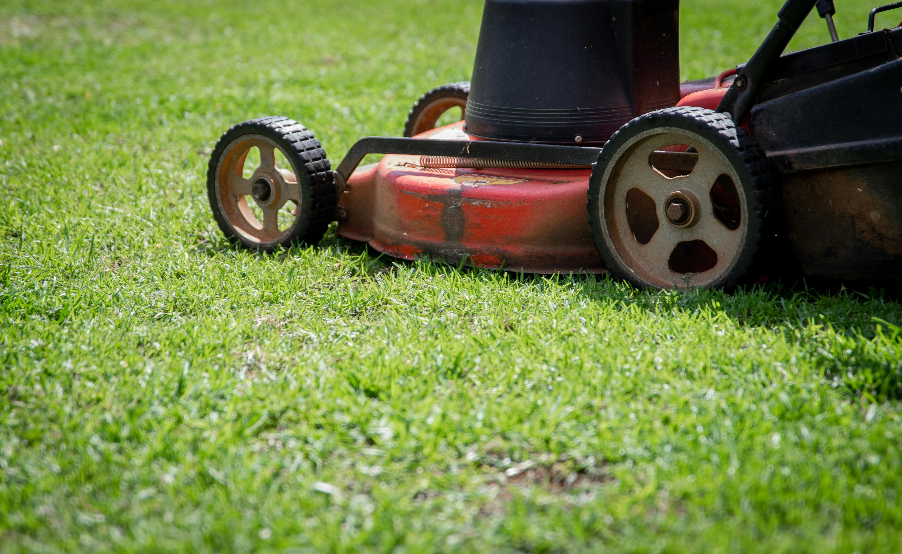
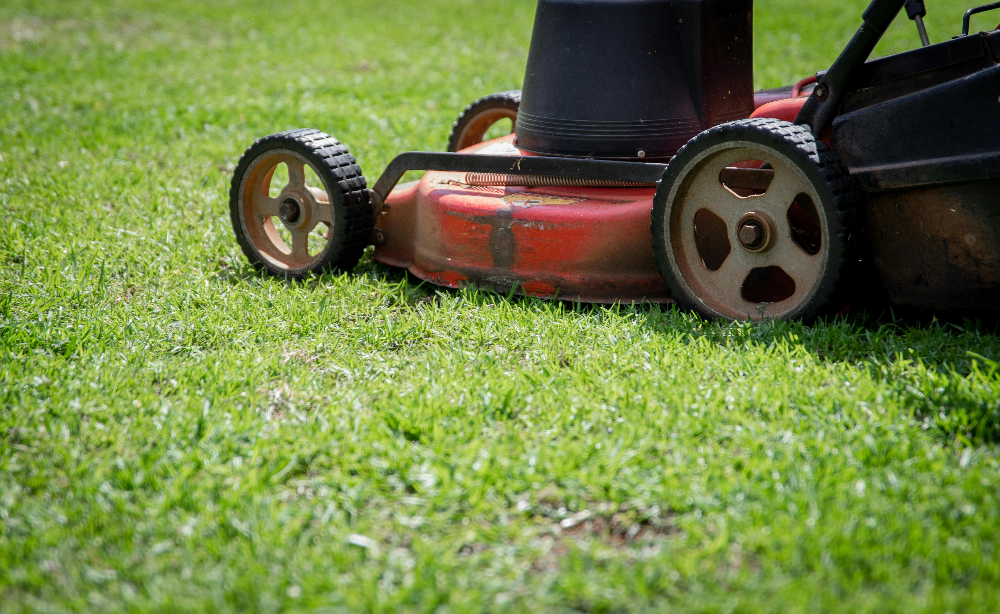

Service de Débroussaillage
Le débroussaillage est une intervention essentielle pour l’entretien et la sécurisation des espaces verts. Il consiste à nettoyer un terrain en enlevant les herbes hautes, les broussailles et autres végétations denses qui pourraient représenter un danger ou nuire à l’esthétique du paysage.
Pourquoi le débroussaillage est-il important ?
Un terrain envahi par la végétation peut rapidement devenir un problème, notamment en période estivale où les risques d’incendie sont accrus. En plus de la sécurité, un bon entretien offre de nombreux avantages :
- Prévention des incendies : En réduisant la masse végétale sèche, le débroussaillage limite la propagation des flammes en cas de feu.
- Valorisation du terrain : Un espace propre et entretenu est plus agréable et peut même augmenter la valeur d’un bien immobilier.
- Réduction des nuisibles : Rongeurs, insectes et autres animaux indésirables trouvent refuge dans les herbes hautes. Un terrain bien dégagé limite leur présence.
- Respect des obligations légales : Dans certaines zones, le débroussaillage est une obligation réglementaire pour éviter les sanctions.
 


Nos prestations de débroussaillage
Lucas Jardins propose un service complet et adapté à chaque type de terrain :
➡ Débroussaillage manuel
Idéal pour les petits terrains, les jardins ou les zones difficiles d’accès. Nous utilisons des outils spécialisés tels que des sécateurs, des cisailles et des débroussailleuses électriques pour un travail soigné et précis.
➡ Débroussaillage mécanique
Recommandé pour les grandes surfaces, ce service permet un travail rapide et efficace grâce à l’utilisation de machines performantes comme les débroussailleuses thermiques, les broyeurs et les tracteurs équipés de lames spéciales.
➡ Entretien des espaces verts
En complément du débroussaillage, nous proposons la tonte des pelouses, la taille des haies et l’enlèvement des déchets verts pour un espace parfaitement entretenu.
➡ Nettoyage après intervention
Après chaque débroussaillage, nous nous occupons du ramassage et de l’évacuation des végétaux coupés afin de vous laisser un terrain propre et dégagé.
Pourquoi choisir Lucas Jardins ?
Avec plusieurs années d’expérience dans l’entretien paysager, Lucas Jardins s’engage à offrir un service de qualité, respectueux de l’environnement et conforme aux réglementations locales.
Nos engagements :
- Intervention rapide et efficace
- Équipe professionnelle et expérimentée
- Utilisation de matériel performant
- Respect des normes environnementales
- Devis gratuit et personnalisé
Vous souhaitez en savoir plus ou obtenir un devis ? Contactez-nous dès aujourd’hui et profitez d’un espace vert propre et sécurisé !